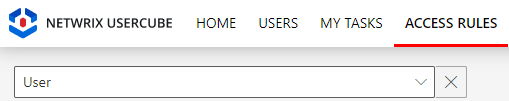
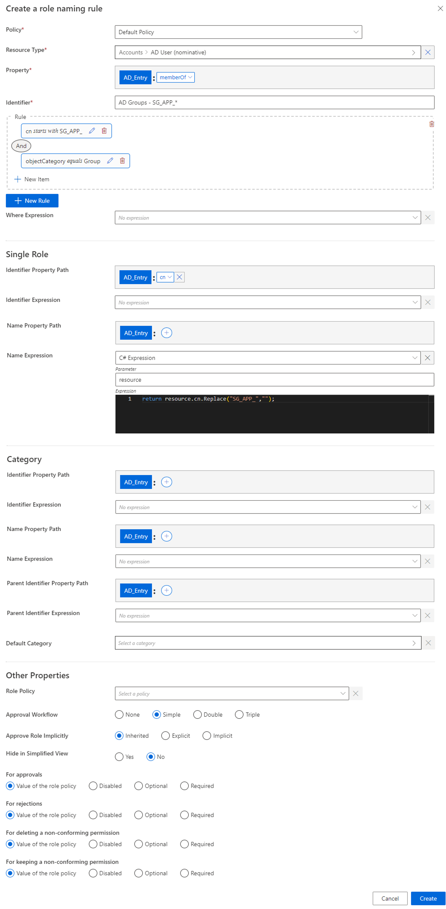
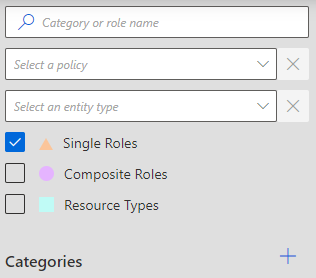
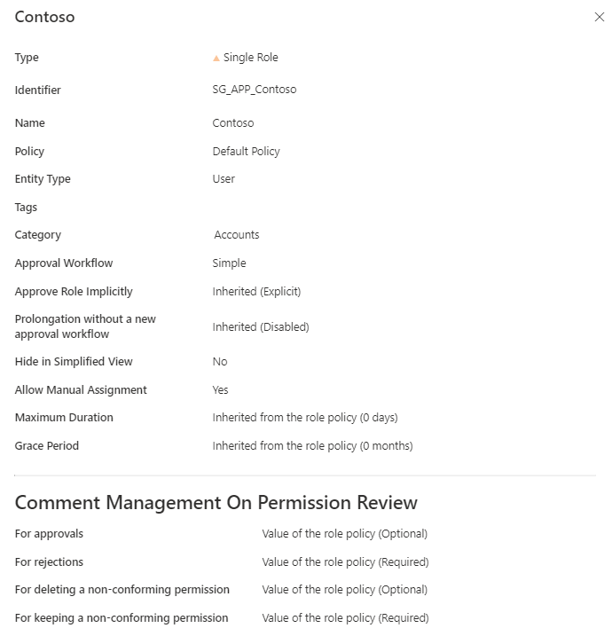
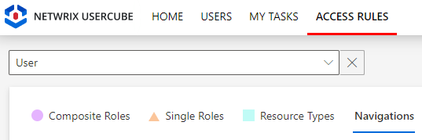
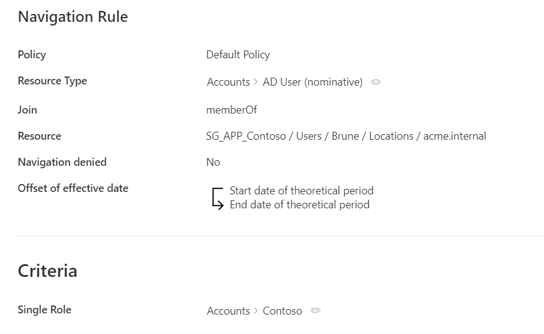

Create Roles in Bulk
How to create role naming rules, which create single roles using existing naming conventions from the managed system. See the Role Mapping topic for additional information.
Overview
A role naming rule automatically creates single roles and the corresponding navigation rules based on the name of the corresponding entitlements in the managed system.
Role naming rules replace the tedious process of manual role creation. Instead of creating roles individually with their navigation rules, you can use role naming rules to generate roles in bulk and thus faster create the single role catalog.
For example, consider a naming convention in our organization that states that AD groups have their cn:
SG_APP_<applicationName>. Then, we can create a naming rule that indicates that for all AD groups starting withSG_APP_, we create a role that gives the adequate user the corresponding group membership, with<applicationName>as a name. For example, we have the application Contoso and the groupSG_APP_Contoso.
Roles created via role naming rules can still be modified later in the UI, if needed.
A role naming rule, for a given resource type, creates roles and rules only for resources which are not yet linked to a role, nor a navigation rule of this resource type. This implies that:
- role naming rules do not overwrite manual changes;
- role naming rules cannot link more than one resource (so one entitlement) to one role.
If a role naming rule is supposed to create a role that already exists, then a corresponding navigation rule is created only if the existing role has the same policy and category as specified in the role naming rule.
Participants and Artifacts
For a given managed system, integrators may need the help of the application owners who know the application's users, entitlements and data model.
| Input | Output |
|---|---|
|
Create a Provisioning Rule
(required) |
Role naming rule Single roles Navigation rules Categories |
Create a Role Naming Rule
Create a role naming rule by proceeding as follows:
-
On the home page, click on Access Rules in the Configuration section.

-
In the dropdown menu at the top left, choose the entity type to which the future naming rule will be applied.

-
Click on the Role Naming Conventions tab and on the addition button at the top right corner.

-
Fill in the fields.

-
Policy: Policy in which the rule exists. -
Property: navigation property which will define the actual entitlement in the future navigation rule. -
Identifier: must be unique among rules and without any whitespace. -
+ New Rule: a naming rule is based on the union of rules, themselves based on the intersection of rule items. A rule item specifies one of the conditions that will trigger the enforcement of the naming rule. See the Role Mapping topic for additional information.
-
Where Expression: C# expression returning a boolean to condition the application of the rule.Netwrix Identity Manager (formerly Usercube) recommends using this option only when the options available in the rule items do not suffice.
-
Single Role: single role(s) to be created. See the Create a Role Manually topic for additional information.
Identifier: must be unique among roles and without any whitespace. If the defined identifier is already used, then neither the role nor the rule is created. Can be defined by a property path and/or Expressions (mandatory).Name: will be displayed in the UI to identify the future single role. Can be defined by a property path and/or an Expressions.
-
Category: the Category for the future role(s).
Identifier: either matches an existing category and selects it, or doesn't match and therefore a new category is created. Can be defined by a property path and/or an expression.Name: will be displayed in the UI to identify the category. Ignored if theIdentifierattribute matches an existing category's identifier. Can be defined by a property path and/or an expression.Parent Identifier: for a potential parent category. Must match an existing category's identifier. Can be defined by a property path and/or an expression.Default Category: category for the future role(s) if the category'sIdentifierattribute isn't filled in or doesn't compute.
-
Role Policy: policy in which the future roles exist. -
Approval Workflow: represents the number of validations required to assign the future role(s). -
Approve Role Implicitly: needs at least a simple approval workflow.Implicitmode bypasses the approval step(s) if the person who issues the role request is also the role officer.Explicitrefuses said bypass.Inheritedfollows the policy decision to approve roles implicitly or not. -
Hide in Simplified View: hides the role from the users' Simplified View in View Permissions dialog. This setting does not apply to roles which are either inferred or have workflow states which require manual action. -
Comment Management on Permission Review: to change if different from the role policy.
Our example would look like:

-
-
Click on Create and see a line added on the rules page.
Impact of Modifications
As naming rules are applied only to resources that aren't already linked to a role or a navigation rule, neither deletion nor modification in a naming rule can affect the previously created roles and rules.
Verify Naming Convention
In order to verify the process:
-
to take the changes into account, on the appropriate connector's overview page click on Jobs > Apply Naming Conventions;

-
check that the correct roles and rules were created.
For roles, click on Access Roles on the home page in the Configuration section.
Select single roles and find the role(s) you created inside the right category and with the right parameters.

Our example would look like:

For rules, click on Access Rules on the home page in the Configuration section.
Select navigation rules and find the rule(s) you created with the right parameters.

Our example would look like:
